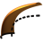
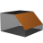
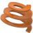
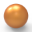

12.3. Shapes
Commands to create faces in the Shapes menu:
Create a plane face. → | |
 | Create faces from coplanar curves, from planar boundaries and boundaries that are almost planar. → |
 | Create single curved faces via linear sweeps. → |
 | Generate side faces between two contours. → |
Create one or more faces by rotating the selected entities. → | |
Create faces from two curves that face each other. → | |
Create a face from a maximum of four boundaries. → | |
 | Create a face from several curve chains in one direction plus several curve chains in the other direction. → |
 | Create a filling face. → |
 | Create faces with an offset from existing faces. → |
 | Create a face from curves that are adopted as isoparametric curves. → |
 | Create a guided face based on contour curves that are led along guide curves. → |
Insert a blending face between two faces. → | |
Join multiple faces into a face. → | |
 | Create a fillet face. → |
 | Create a chamfer face between two faces. → |
 | Insert helical face. → |
 | Create a sphere. → |
Create cylinder. → | |
 | Create cone or truncated cone. → |
 | Close openings within faces. → |
 | Create faces to guide the tool during swarf milling. → |
 | Create extension faces - for milling as well. → |
 | Join multiple free-form or analytical faces into a face. → |
 | Construct a solid from faces and solids. → |